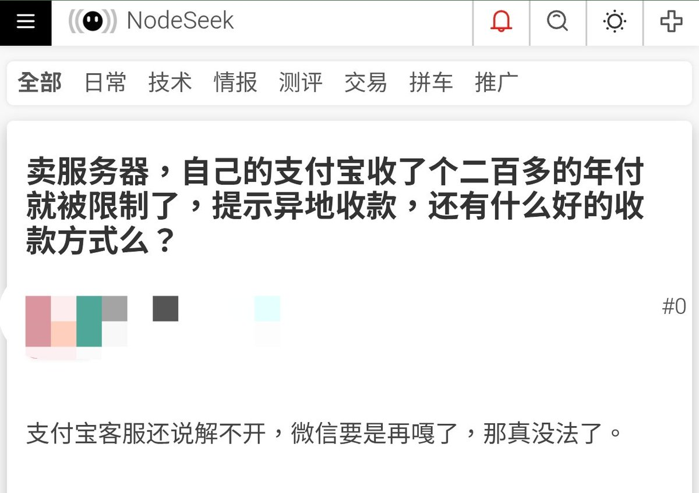
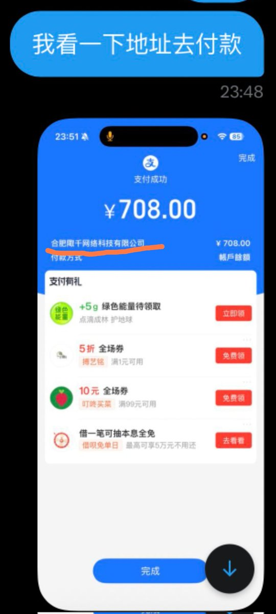

@ChisakaKanako （这里并没有开脱辩解，因为和我利益并不相关，只是回答下关于收款退款）
在国内反诈的背景下，拿自己的支付宝收款大概图一的结局
然后你发的聊天记录里（图2）里显示了收款方是企业户，大概率不是药商自己控制的账户而是代理收款那类的（比如说你买VPN），账户控制权不在药商手上

在国内反诈的背景下，拿自己的支付宝收款大概图一的结局
然后你发的聊天记录里（图2）里显示了收款方是企业户，大概率不是药商自己控制的账户而是代理收款那类的（比如说你买VPN），账户控制权不在药商手上


了解到的情况是主包因为断药了很急想买药直接扫码付款了，但是药商的二维码下有说明如果备注就不发货不退款，我买过很多家药商也有做药商的朋友，我能理解写备注可能会造成一些影响，你可以不发货，但是直接失联/拉黑不退款这很过分，你直接不发货退款就行了这能造成什么损失呢，明摆着就是店大欺客了 https://t.co/XWXM1NE783 https://t.co/nhoo5wV94V